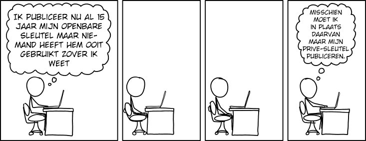

Cryptografie
In deze les, ga je leren over veiligheidsrisico's op het internet en hoe data ter bescherming versleuteld kan worden.
Op deze pagina, ga je verschillende manieren leren om berichten te versleutelen en ontcijferen.
- Schrijf een geheim bericht aan je partner. Bedenk een manier om het bericht te versleutelen. Stuur dan het versleutelde bericht naar je partner.
- Je partner stuurt nu jou een versleuteld bericht. Wanneer je het ontvangt, probeert het dan te ontcijferen. Welke strategieën gebruik je om het te ontcijferen?
-
 Vergelijk de methodes met een ander paar leerlingen. Kon iemand een
bericht ontcijferen? Hoe?
Vergelijk de methodes met een ander paar leerlingen. Kon iemand een
bericht ontcijferen? Hoe?
Cryptografie is de studie van het omzetten van berichten naar codes (versleuteling) en hoe je deze codes weer kan omzetten in het originele bericht (ontcijfering). Net zoals dat TCP voor betrouwbare overdracht zorgt over een onbetrouwbaar netwerk, zorgt cryptografie voor verifieerbare en veilige overdracht over een onveilig netwerk.
Een veilige overdracht kan niet gelezen worden als hij onderschept wordt.
Een verifieerbare overdracht is sowieso van de persoon waarvan het bericht zegt dat het vandaan komt.
In het Nederlands zijn er meerdere woorden die met cryptografie te maken hebben en hetzelfde betekenen. Zo betekenen coderen en versleutelen allebei hetzelfde. Het zelfstandig naamwoord hiervoor is encryptie of versleuteling. Als je een gecodeerd (of versleuteld) bericht weer wilt omzetten naar het origineel, heet dat decoderen of ontcijferen. Tussen al deze woordduo's zit geen verschil in betekenis, dus je hoeft niet bang te zijn als opeens een ander woord gebruikt wordt.
Cryptografie is de methode om berichten te coderen en decoderen
Symmetrische cryptografie gebruikt dezelfde geheime sleutel om te versleutelen en ontcijferen. Symmetrische cryptografie bestaat al duizenden jaren. Het probleem is dat de sleutel eigenlijk ook een bericht is dat veilig verzonden en ontvangen moet worden.
Asymmetrische cryptografie ookwel publiekesleutelcryptografie, is bedacht door wiskundigen in de jaren 70. Het maakt gebruik van twee verschillende sleutels om te versleutelen en ontcijferen, dus het delen van de publieke sleutel verraadt de geheime decodeersleutel niet. Asymmetrische cryptografie is de primaire methode van versleuteling tegenwoordig vanwege zijn hoge niveau van veiligheid.
